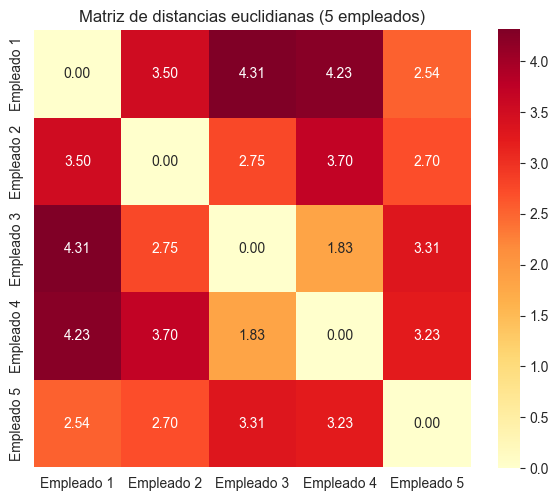
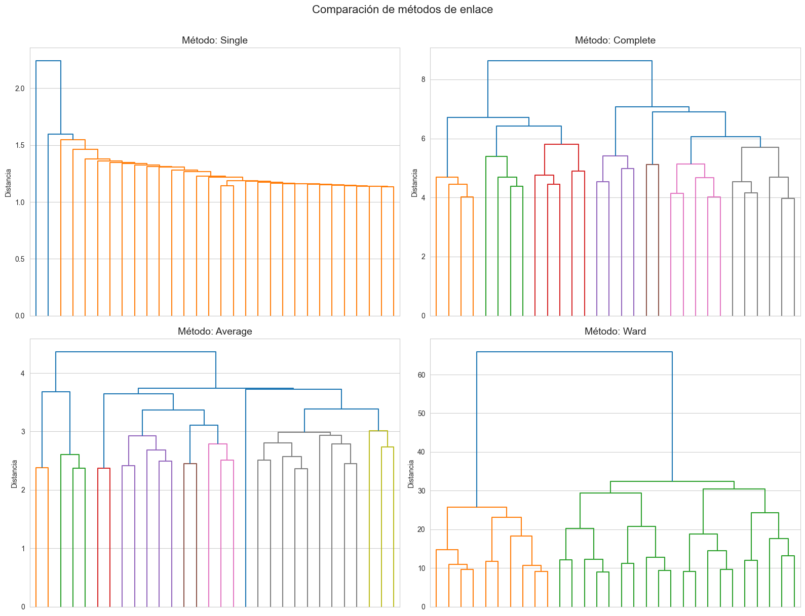
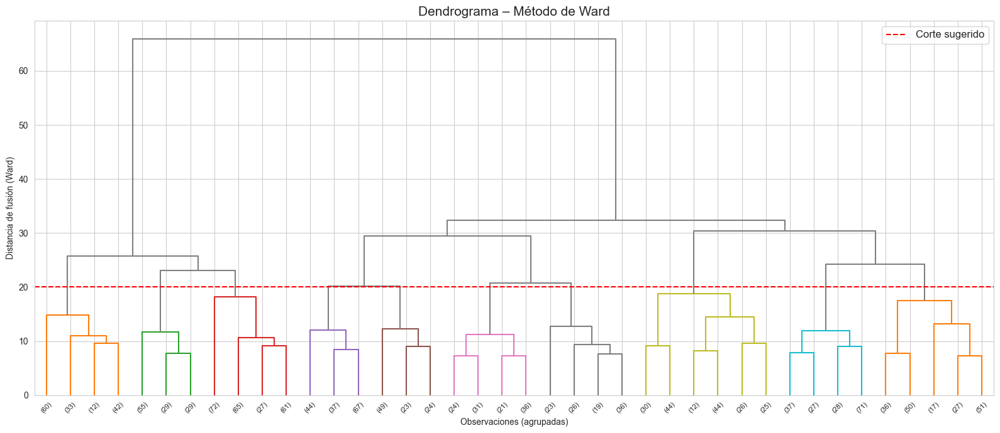
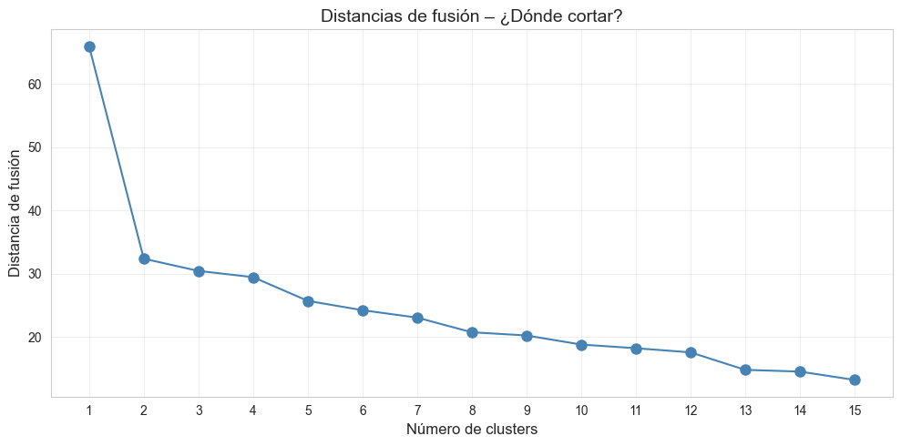
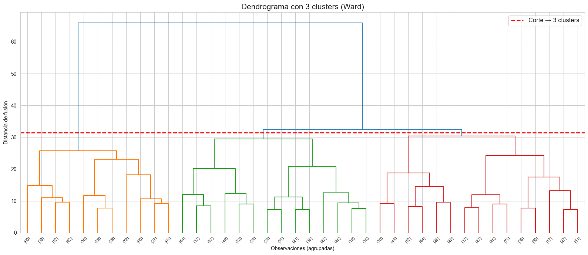
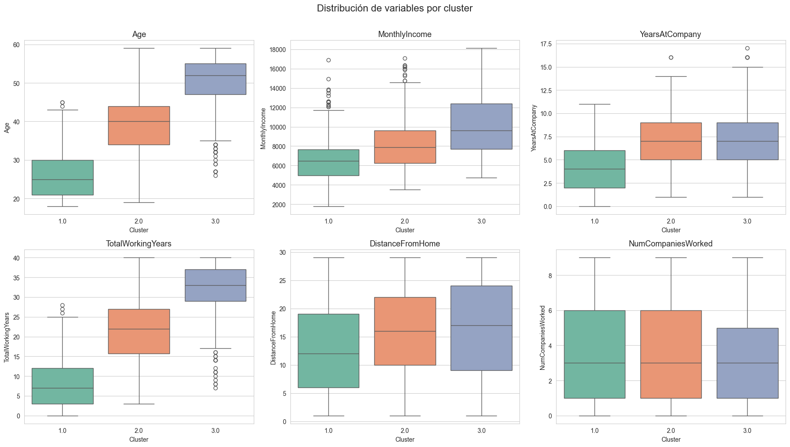
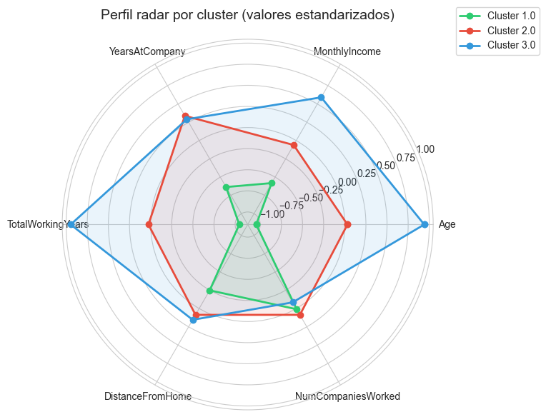
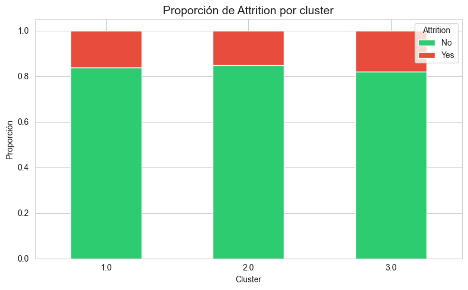

Análisis de Clúster Jerárquico#
Segmentación de empleados con datos de IBM HR#
¿Qué es el análisis de clúster jerárquico?#
El análisis de clúster jerárquico es una técnica de aprendizaje no supervisado que agrupa observaciones similares en una estructura de árbol llamada dendrograma. A diferencia de K-Means, no necesita que definamos de antemano cuántos grupos queremos: el dendrograma nos permite explorar la estructura natural de los datos y decidir el número óptimo de clusters visualmente.
Metodología del taller#
|——|————-|
Paso 1: Cargar y explorar los datos#
Utilizaremos el dataset IBM HR Analytics Employee Attrition & Performance, que contiene información de 1,470 empleados con variables demográficas, salariales y de desempeño.
Descarga: IBM HR Analytics en Kaggle
Comencemos cargando las librerías y los datos.
[3]:
import pandas as pd
import numpy as np
import matplotlib.pyplot as plt
import seaborn as sns
from scipy.cluster.hierarchy import dendrogram, linkage, fcluster
from scipy.spatial.distance import pdist
from sklearn.preprocessing import StandardScaler
sns.set_style('whitegrid')
plt.rcParams['figure.figsize'] = (12, 6)
[4]:
df = pd.read_csv('IBM_HR_Employee.csv')
print(f'Dimensiones: {df.shape[0]} empleados, {df.shape[1]} variables')
df.head()
Dimensiones: 1470 empleados, 35 variables
[4]:
| Age | Attrition | BusinessTravel | DailyRate | Department | DistanceFromHome | Education | EducationField | EmployeeCount | EmployeeNumber | ... | RelationshipSatisfaction | StandardHours | StockOptionLevel | TotalWorkingYears | TrainingTimesLastYear | WorkLifeBalance | YearsAtCompany | YearsInCurrentRole | YearsSinceLastPromotion | YearsWithCurrManager | |
|---|---|---|---|---|---|---|---|---|---|---|---|---|---|---|---|---|---|---|---|---|---|
| 0 | 56 | No | Non-Travel | 1115 | Research & Development | 4 | 2 | Other | 1 | 1 | ... | 1 | 80 | 0 | 36 | 2 | 3 | 8 | 3 | 5 | 4 |
| 1 | 46 | No | Travel_Rarely | 1484 | Sales | 26 | 3 | Marketing | 1 | 2 | ... | 4 | 80 | 0 | 28 | 2 | 3 | 5 | 4 | 0 | 4 |
| 2 | 32 | No | Non-Travel | 1497 | Research & Development | 12 | 1 | Marketing | 1 | 3 | ... | 4 | 80 | 1 | 13 | 1 | 2 | 4 | 1 | 3 | 4 |
| 3 | 25 | No | Travel_Frequently | 653 | Research & Development | 6 | 2 | Technical Degree | 1 | 4 | ... | 1 | 80 | 0 | 4 | 6 | 2 | 4 | 4 | 1 | 2 |
| 4 | 38 | No | Travel_Rarely | 402 | Sales | 11 | 3 | Life Sciences | 1 | 5 | ... | 3 | 80 | 3 | 23 | 1 | 3 | 8 | 3 | 1 | 8 |
5 rows × 35 columns
Paso 2: Seleccionar y estandarizar variables#
Para el clúster jerárquico necesitamos variables numéricas. Seleccionaremos 6 variables que un gerente de RRHH consideraría clave para entender los perfiles de sus empleados:
|———-|————————|
Age | Etapa de carrera del empleado |MonthlyIncome | Nivel salarial |YearsAtCompany | Antigüedad y lealtad |TotalWorkingYears | Experiencia laboral total |DistanceFromHome | Calidad de vida / riesgo de rotación |NumCompaniesWorked | Estabilidad laboral histórica |¿Por qué estandarizar?#
Las variables tienen escalas muy diferentes: MonthlyIncome toma valores de miles mientras que NumCompaniesWorked apenas llega a 9. Si no estandarizamos, la variable con valores más grandes dominará completamente el cálculo de distancias, haciendo que las demás variables sean irrelevantes.
La estandarización transforma cada variable para que tenga media 0 y desviación estándar 1, poniendo a todas en la misma escala.
[5]:
# Seleccionar variables numéricas clave
variables = ['Age', 'MonthlyIncome', 'YearsAtCompany',
'TotalWorkingYears', 'DistanceFromHome', 'NumCompaniesWorked']
X = df[variables].dropna()
print(f'Observaciones utilizadas: {X.shape[0]}')
X.describe().round(2)
Observaciones utilizadas: 1470
[5]:
| Age | MonthlyIncome | YearsAtCompany | TotalWorkingYears | DistanceFromHome | NumCompaniesWorked | |
|---|---|---|---|---|---|---|
| count | 1470.00 | 1470.00 | 1470.00 | 1470.00 | 1470.00 | 1470.00 |
| mean | 38.81 | 8399.39 | 6.19 | 20.75 | 15.05 | 3.68 |
| std | 12.13 | 3068.36 | 2.95 | 12.11 | 8.31 | 2.80 |
| min | 18.00 | 1793.00 | 0.00 | 0.00 | 1.00 | 0.00 |
| 25% | 28.00 | 6242.50 | 4.00 | 10.00 | 9.00 | 1.00 |
| 50% | 40.00 | 7785.50 | 6.00 | 21.00 | 15.00 | 3.00 |
| 75% | 50.00 | 10042.50 | 8.00 | 31.00 | 22.00 | 6.00 |
| max | 59.00 | 18108.00 | 17.00 | 40.00 | 29.00 | 9.00 |
[6]:
# Estandarizar
scaler = StandardScaler()
X_scaled = scaler.fit_transform(X)
X_scaled = pd.DataFrame(X_scaled, columns=variables, index=X.index)
# Verificar: media ≈ 0, desviación estándar ≈ 1
print('Media por variable (debe ser ≈ 0):')
print(X_scaled.mean().round(4))
print('\nDesv. estándar por variable (debe ser ≈ 1):')
print(X_scaled.std().round(4))
Media por variable (debe ser ≈ 0):
Age -0.0
MonthlyIncome 0.0
YearsAtCompany -0.0
TotalWorkingYears -0.0
DistanceFromHome -0.0
NumCompaniesWorked -0.0
dtype: float64
Desv. estándar por variable (debe ser ≈ 1):
Age 1.0003
MonthlyIncome 1.0003
YearsAtCompany 1.0003
TotalWorkingYears 1.0003
DistanceFromHome 1.0003
NumCompaniesWorked 1.0003
dtype: float64
Paso 3: Entender las métricas de distancia#
El clúster jerárquico funciona agrupando las observaciones más cercanas entre sí. Para saber qué tan «cercanos» o «lejanos» están dos empleados, necesitamos una métrica de distancia.
Distancias más usadas#
|———|——————-|—————|
Ejemplo visual#
Imaginemos dos empleados:
Empleado A: edad 30, ingreso $5,000, antigüedad 3 años.
Empleado B: edad 32, ingreso $5,200, antigüedad 4 años.
La distancia euclidiana mide qué tan diferente es el perfil completo de A comparado con B. Si la distancia es pequeña, los empleados son similares y quedarán en el mismo clúster.
Calculemos la matriz de distancias entre los primeros 5 empleados como ejemplo.
[7]:
# Calcular distancias euclidianas entre los primeros 5 empleados
muestra = X_scaled.iloc[:5]
dist_eucl = pdist(muestra, metric='euclidean')
# Convertir a matriz cuadrada para visualizar
from scipy.spatial.distance import squareform
dist_matrix = pd.DataFrame(
squareform(dist_eucl),
index=[f'Empleado {i+1}' for i in range(5)],
columns=[f'Empleado {i+1}' for i in range(5)]
)
plt.figure(figsize=(6, 5))
sns.heatmap(dist_matrix, annot=True, fmt='.2f', cmap='YlOrRd', square=True)
plt.title('Matriz de distancias euclidianas (5 empleados)')
plt.tight_layout()
plt.show()
print('Los empleados con MENOR distancia entre sí son los más similares.')

Los empleados con MENOR distancia entre sí son los más similares.
Paso 4: Entender los métodos de enlace (linkage)#
Una vez que sabemos la distancia entre empleados individuales, necesitamos definir cómo medir la distancia entre grupos de empleados. Esto se llama método de enlace o linkage.
Métodos principales#
|——–|——————————————-|—————|
¿Cuál elegir?#
En la práctica empresarial, Ward es el más utilizado porque:
Produce segmentos de tamaño razonable (no tiene un cluster gigante y varios minúsculos).
Es equivalente a minimizar la suma de cuadrados internos, lo que tiene sentido estadístico.
Funciona bien con distancia euclidiana sobre datos estandarizados.
A continuación compararemos visualmente cómo cambia el dendrograma según el método de enlace.
[8]:
# Comparar 4 métodos de enlace
metodos = ['single', 'complete', 'average', 'ward']
fig, axes = plt.subplots(2, 2, figsize=(16, 12))
for ax, metodo in zip(axes.flatten(), metodos):
Z = linkage(X_scaled, method=metodo, metric='euclidean')
dendrogram(Z, ax=ax, truncate_mode='lastp', p=30,
leaf_font_size=8, no_labels=True)
ax.set_title(f'Método: {metodo.capitalize()}', fontsize=14)
ax.set_ylabel('Distancia')
plt.suptitle('Comparación de métodos de enlace', fontsize=16, y=1.01)
plt.tight_layout()
plt.show()

Paso 5: Construir e interpretar el dendrograma#
El dendrograma es la representación gráfica del proceso de agrupamiento. Se lee de abajo hacia arriba:
En la base, cada observación es un clúster individual.
Al subir, los clústers más cercanos se fusionan.
La altura a la que se fusionan indica qué tan diferentes son los grupos que se unen.
¿Cómo decidir cuántos clusters crear?#
Se busca el salto más grande en la distancia de fusión. Esto equivale a trazar una línea horizontal que cruce las ramas más largas sin cortar ninguna otra fusión. El número de líneas verticales que corten esa línea horizontal es el número de clusters.
Vamos a usar Ward como método de enlace (el más recomendado en la práctica).
[9]:
# Dendrograma con método de Ward
Z_ward = linkage(X_scaled, method='ward', metric='euclidean')
plt.figure(figsize=(16, 7))
dendrogram(
Z_ward,
truncate_mode='lastp', p=40,
leaf_font_size=8,
color_threshold=20, # colorear por clusters
above_threshold_color='gray'
)
plt.axhline(y=20, color='red', linestyle='--', label='Corte sugerido')
plt.title('Dendrograma – Método de Ward', fontsize=15)
plt.xlabel('Observaciones (agrupadas)')
plt.ylabel('Distancia de fusión (Ward)')
plt.legend(fontsize=12)
plt.tight_layout()
plt.show()

Distancias de fusión: ¿dónde está el salto más grande?#
Para confirmar visualmente el número óptimo de clusters, podemos graficar las últimas k distancias de fusión. El punto donde la curva da un «codo» o salto brusco indica el corte natural.
[10]:
# Gráfico de distancias de fusión (últimas 15 fusiones)
ultimas = Z_ward[-15:, 2]
plt.figure(figsize=(10, 5))
plt.plot(range(1, 16), ultimas[::-1], 'o-', color='steelblue', markersize=8)
plt.xlabel('Número de clusters', fontsize=12)
plt.ylabel('Distancia de fusión', fontsize=12)
plt.title('Distancias de fusión – ¿Dónde cortar?', fontsize=14)
plt.xticks(range(1, 16))
plt.grid(True, alpha=0.3)
plt.tight_layout()
plt.show()
print('Busque el mayor salto entre puntos consecutivos.')
print('Eso indica el número óptimo de clusters.')

Busque el mayor salto entre puntos consecutivos.
Eso indica el número óptimo de clusters.
Paso 6: Cortar el dendrograma para formar clusters#
Basados en el análisis del dendrograma y las distancias de fusión, vamos a cortar el árbol para obtener un número concreto de grupos. Usaremos la función fcluster() de scipy.
Hay dos formas de cortar:
Por número de clusters (
maxclust): decidimos directamente cuántos grupos queremos.Por distancia (
distance): elegimos una altura y todas las ramas por debajo se convierten en clusters.
Usaremos 3 clusters como punto de partida (típico resultado del codo en datos de IBM HR).
[11]:
# Cortar el dendrograma en 3 clusters
n_clusters = 3
df.loc[X.index, 'Cluster'] = fcluster(Z_ward, t=n_clusters, criterion='maxclust')
# Verificar tamaño de cada cluster
conteo = df.loc[X.index, 'Cluster'].value_counts().sort_index()
print('Empleados por cluster:')
print(conteo)
print(f'\nTotal: {conteo.sum()}')
Empleados por cluster:
Cluster
1.0 485
2.0 460
3.0 525
Name: count, dtype: int64
Total: 1470
Visualizar los clusters en el dendrograma#
Redibujamos el dendrograma con los clusters coloreados para verificar el corte.
[12]:
# Dendrograma coloreado por clusters
plt.figure(figsize=(16, 7))
# Obtener la distancia de fusión justo antes de pasar de 3 a 2 clusters
corte = (Z_ward[-n_clusters, 2] + Z_ward[-(n_clusters - 1), 2]) / 2
dendrogram(
Z_ward,
truncate_mode='lastp', p=40,
leaf_font_size=8,
color_threshold=corte
)
plt.axhline(y=corte, color='red', linestyle='--', linewidth=2,
label=f'Corte → {n_clusters} clusters')
plt.title(f'Dendrograma con {n_clusters} clusters (Ward)', fontsize=15)
plt.xlabel('Observaciones (agrupadas)')
plt.ylabel('Distancia de fusión')
plt.legend(fontsize=12)
plt.tight_layout()
plt.show()

Paso 7: Perfilar y analizar los segmentos obtenidos#
Ahora viene la parte más importante para un administrador de empresas: ¿qué significan estos clusters?
Para cada cluster calcularemos:
Estadísticas descriptivas de las variables originales (no estandarizadas) para facilitar la interpretación.
Gráficos comparativos para visualizar las diferencias.
Un nombre descriptivo que un gerente de RRHH pueda usar en reuniones.
[13]:
# Estadísticas descriptivas por cluster (variables originales)
df_clusters = df.loc[X.index, variables + ['Cluster']].copy()
perfil = df_clusters.groupby('Cluster')[variables].mean().round(1)
perfil['n_empleados'] = df_clusters.groupby('Cluster').size()
perfil
[13]:
| Age | MonthlyIncome | YearsAtCompany | TotalWorkingYears | DistanceFromHome | NumCompaniesWorked | n_empleados | |
|---|---|---|---|---|---|---|---|
| Cluster | |||||||
| 1.0 | 26.1 | 6614.6 | 4.3 | 8.0 | 13.0 | 3.7 | 485 |
| 2.0 | 39.2 | 8212.3 | 7.2 | 21.1 | 15.8 | 3.9 | 460 |
| 3.0 | 50.2 | 10212.1 | 7.1 | 32.2 | 16.3 | 3.4 | 525 |
[14]:
# Boxplots comparativos por cluster
fig, axes = plt.subplots(2, 3, figsize=(18, 10))
for ax, var in zip(axes.flatten(), variables):
sns.boxplot(data=df_clusters, x='Cluster', y=var, ax=ax,
palette='Set2', hue='Cluster', legend=False)
ax.set_title(var, fontsize=13)
ax.set_xlabel('Cluster')
plt.suptitle('Distribución de variables por cluster', fontsize=16, y=1.01)
plt.tight_layout()
plt.show()

Perfil radar: visión integral de cada segmento#
El gráfico radar permite ver de un vistazo en qué variables sobresale cada cluster. Para construirlo, usamos los promedios estandarizados de cada variable por cluster.
[15]:
# Gráfico radar por cluster
X_scaled_df = X_scaled.copy()
X_scaled_df['Cluster'] = df.loc[X.index, 'Cluster'].values
medias = X_scaled_df.groupby('Cluster')[variables].mean()
# Preparar ángulos
categorias = variables
N = len(categorias)
angulos = np.linspace(0, 2 * np.pi, N, endpoint=False).tolist()
angulos += angulos[:1] # cerrar el polígono
fig, ax = plt.subplots(figsize=(8, 8), subplot_kw=dict(polar=True))
colores = ['#2ecc71', '#e74c3c', '#3498db']
for i, (cluster, fila) in enumerate(medias.iterrows()):
valores = fila.tolist() + [fila.tolist()[0]]
ax.plot(angulos, valores, 'o-', linewidth=2, label=f'Cluster {cluster}',
color=colores[i % len(colores)])
ax.fill(angulos, valores, alpha=0.1, color=colores[i % len(colores)])
ax.set_xticks(angulos[:-1])
ax.set_xticklabels(categorias, fontsize=10)
ax.set_title('Perfil radar por cluster (valores estandarizados)', fontsize=14, pad=20)
ax.legend(loc='upper right', bbox_to_anchor=(1.3, 1.1))
plt.tight_layout()
plt.show()

Cruce con variable de negocio: Rotación (Attrition)#
Una pregunta que todo gerente de RRHH haría es: ¿alguno de estos segmentos tiene mayor rotación? Crucemos los clusters con la variable Attrition para identificar grupos de riesgo.
[16]:
# Tasa de rotación por cluster
df_analisis = df.loc[X.index, ['Cluster', 'Attrition']].copy()
tabla = pd.crosstab(df_analisis['Cluster'], df_analisis['Attrition'])
tabla['Total'] = tabla.sum(axis=1)
tabla['% Rotación'] = (tabla['Yes'] / tabla['Total'] * 100).round(1)
print(tabla)
# Gráfico de barras apiladas
tasa = df_analisis.groupby('Cluster')['Attrition'].value_counts(normalize=True).unstack()
tasa.plot(kind='bar', stacked=True, figsize=(8, 5), color=['#2ecc71', '#e74c3c'])
plt.title('Proporción de Attrition por cluster', fontsize=14)
plt.ylabel('Proporción')
plt.xlabel('Cluster')
plt.legend(title='Attrition')
plt.xticks(rotation=0)
plt.tight_layout()
plt.show()
Attrition No Yes Total % Rotación
Cluster
1.0 407 78 485 16.1
2.0 390 70 460 15.2
3.0 430 95 525 18.1

Asignar nombres descriptivos a los clusters#
Con base en los promedios y las visualizaciones, podemos asignar nombres que un gerente entienda fácilmente. Por ejemplo:
|———|—————-|——–|
Nota: los nombres exactos dependerán de los resultados particulares que obtenga al ejecutar el código. Revise la tabla de promedios y los boxplots para ajustar las etiquetas según lo que observe.
[17]:
# Resumen ejecutivo: tabla final de perfiles
resumen = perfil.copy()
resumen['% Rotación'] = tabla['% Rotación']
resumen
[17]:
| Age | MonthlyIncome | YearsAtCompany | TotalWorkingYears | DistanceFromHome | NumCompaniesWorked | n_empleados | % Rotación | |
|---|---|---|---|---|---|---|---|---|
| Cluster | ||||||||
| 1.0 | 26.1 | 6614.6 | 4.3 | 8.0 | 13.0 | 3.7 | 485 | 16.1 |
| 2.0 | 39.2 | 8212.3 | 7.2 | 21.1 | 15.8 | 3.9 | 460 | 15.2 |
| 3.0 | 50.2 | 10212.1 | 7.1 | 32.2 | 16.3 | 3.4 | 525 | 18.1 |
Resumen del taller#
¿Qué aprendimos?#
|———-|————|
Preguntas de discusión#
¿Qué pasaría si usáramos más variables (por ejemplo,
JobSatisfaction,PerformanceRating)? ¿Mejoraría la segmentación?¿Cómo le presentaría estos resultados a un gerente que no sabe estadística?
¿Qué acciones concretas de retención propondría para el cluster con mayor rotación?
¿En qué se diferencia este enfoque del K-Means que veremos en la próxima sesión?
¿Qué ventajas tiene el dendrograma sobre simplemente elegir un número de clusters al azar?